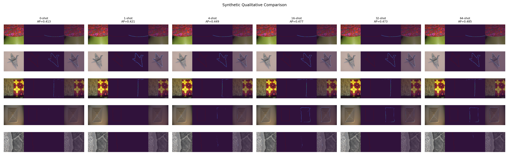

1. Title block
RWTD synthetic domain - DiffEdge LoRA C 64-shot evaluation
Purpose: Validate that the standardized page format can represent a real completed run from results_lightweight.
2. Run identity / provenance
3. Configuration
4. Headline metrics
| Metric | Result | Baseline | Delta |
|---|---|---|---|
| edge/AP | 0.484539 | 0.413314 (synthetic zero-shot) | +0.071225 |
| edge/ODS_f1 | 0.654000 | 0.591961 (synthetic zero-shot) | +0.062039 |
| edge/OIS_f1 | 0.654737 | 0.593976 (synthetic zero-shot) | +0.060761 |
Primary metric: edge/AP.
5. Visual comparison gallery
Fixed sample list from bundle: 85, 441, 96, 244, 181. Each preview is a fixed composite panel from the run.


6. QC / diagnostics



Trust signal: metrics improve materially over zero-shot, but selected difficult previews still show boundary fragmentation risk.
7. Interpretation
- Improved: AP/ODS/OIS all increased versus synthetic zero-shot baseline.
- Regressed: failure-case previews still expose weak thin-edge continuity.
- Unclear: robustness on truly hard real-world textures is not proven by this synthetic-focused run.
- Next: publish an aligned Wild-BSDS 64-shot run page with identical sample IDs and the same QC diagnostics.
8. Artifact links
- Full outputs:
results_lightweight/per_run/synthetic_diffedge_rwtd_loraC_64shot/ - Logs:
results_lightweight/per_run/synthetic_diffedge_rwtd_loraC_64shot/performance_summary.json - Checkpoint/run folder:
/home/nada/PycharmProjects/DiffusionEdge/runs/diffedge_rwtd_lora_stage1/synthetic_diffedge_rwtd_loraC_64shot/ - External index:
results_lightweight/report.md